Превью проектов
21 проекта подготовлены к статичному показу. Каждый собран, отрендерен в headless-Chromium на 1440×900 и 390×844 и проверен на ошибки консоли и битые запросы. Ничего не закоммичено — это локальная копия для ревью.
CabHUB
Готов к показуЛендинг службы такси
Самая законченная коммерческая вёрстка: чистый десктоп, полноценный адаптив с бургер-меню, 0 ошибок.
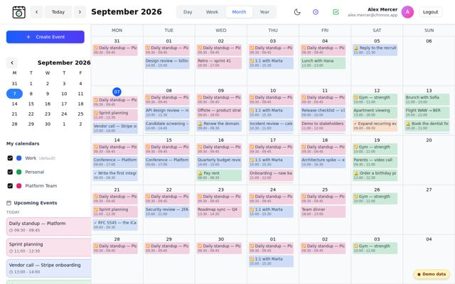
Chronos
Готов к показуКалендарь и таск-менеджер
Открывается сразу на календаре: 31 событие, 3 календаря, 4 повторяющиеся серии. Починен баг рекуррентности (Invalid Date).
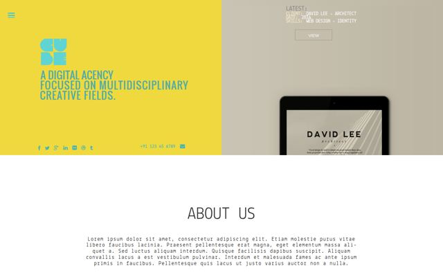
Cube
Готов к показуСайт креативного агентства
Рендерится полностью и аккуратно на 1440 и 390. Убран фантомный горизонтальный скролл.
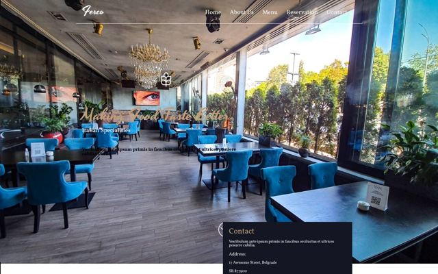
Fesco
Готов к показуКорпоративный сайт
Из index.html вырезано 37 строк PHP с креденшелами БД, которые браузер рендерил как текст.
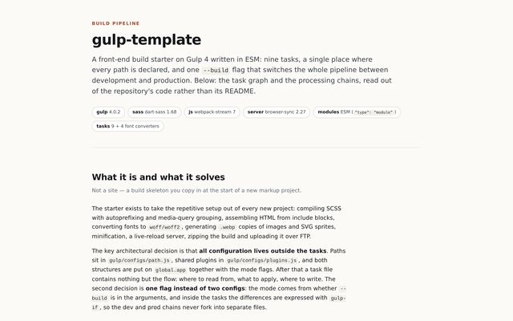
Gulp Template
Готов к показуСхема работы сборки (документация)
Заменён пустой стартер на страницу с реальным графом gulp-тасков и 14-ступенчатым SCSS-пайплайном. На английском.
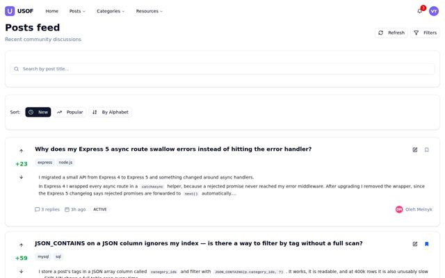
USOF
Готов к показуQ&A-платформа в духе Stack Overflow
6 пользователей, 10 вопросов, 49 комментариев. Публикация, голосование и MDX-редактор работают в памяти.
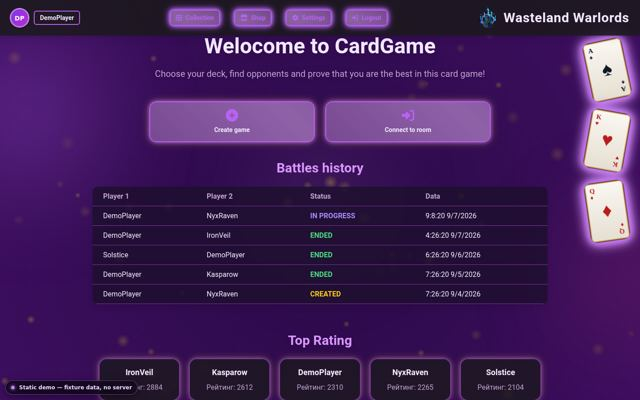
Wasteland Warlords
Готов к показуКарточный батлер на чистом JS
Бой реально играется по правилам самого проекта, но противник — локальный бот; WebSocket не участвует.
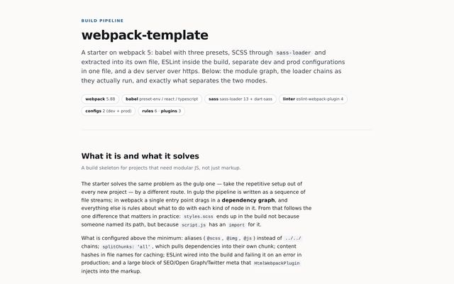
Webpack Template
Готов к показуСхема работы сборки (документация)
Страница с четырьмя loader-цепочками в порядке исполнения и сравнением dev/prod конфигов. На английском.
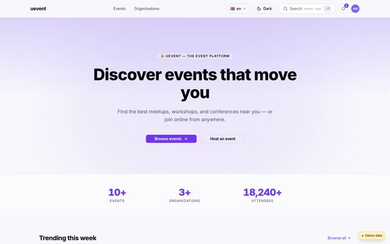
uEvent
Готов к показуПлатформа событий и продажи билетов
Переведён с SSR на SPA. Полный флоу покупки + кабинет организатора. Stripe нигде не подключён.
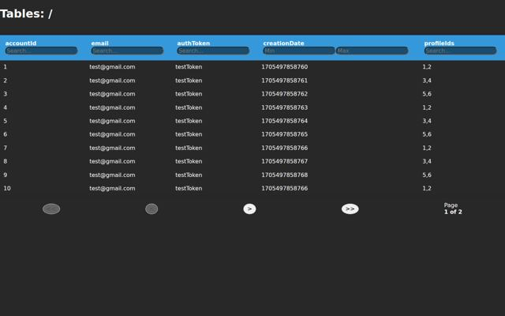
Amazon Tables
Готов с оговоркамиТестовое задание для amazon.com
Сортировка, фильтры, пагинация и drill-down работают на фикстурах вместо живого API.
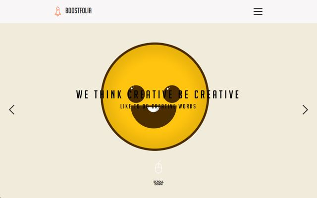
Boostfolia
Готов с оговоркамиЛендинг-портфолио
Технически чисто, но дизайн объективно не доделан: пустая галерея и секция клиентов.
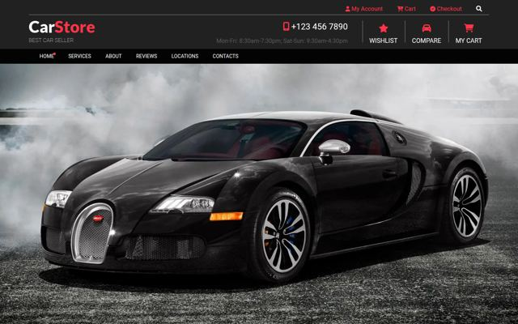
CarStore
Готов с оговоркамиВёрстка магазина автоаксессуаров
Из ветки carstore.layout. Починены 13 битых @font-face и 5 блокеров сборки. Мобильная шапка сломана.
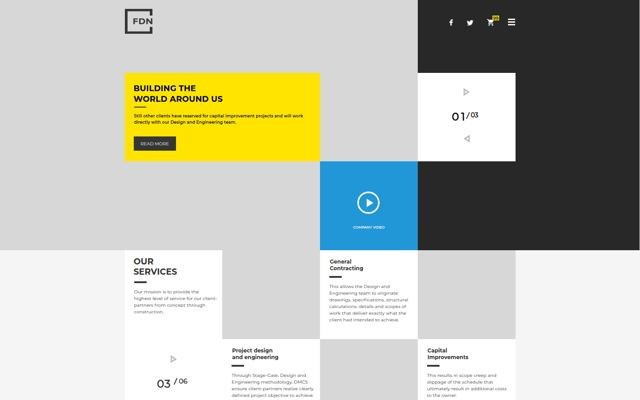
FND
Готов с оговоркамиМногостраничный корпоративный сайт
Навигации между страницами не существовало — связал. Починен баг двойного клика в бургере.
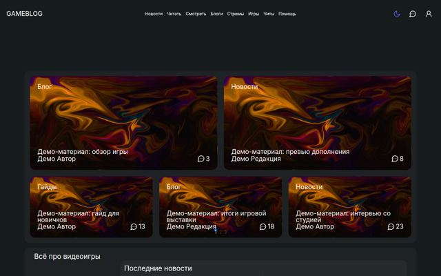
GameBlog
Готов с оговоркамиИгровой портал
Проект никогда не собирался: 14 подряд падений build. Контент — демо-заглушки.
Hello Money
Готов с оговоркамиЛендинг финтех-продукта
Статика ужата 66 МБ → 1.5 МБ пиксель-в-пиксель. Починен basename роутера.
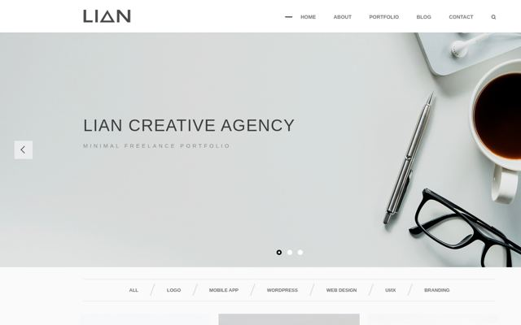
LIAN
Готов с оговоркамиМногостраничник креативного агентства (5 страниц)
Восстановлен «полетевший» SCSS главной. 2 из 7 заявленных страниц не существуют в исходнике.
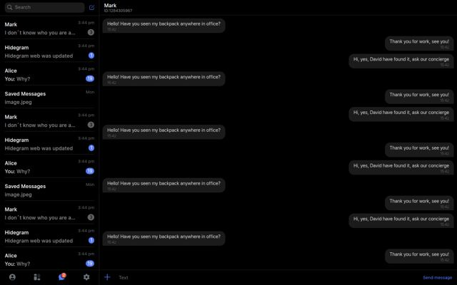
Messenger Layout
Готов с оговоркамиПиксель-перфект копия интерфейса мессенджера
Вёрстка точная. Дубликат telegram-copy-layout — показывать стоит только один.
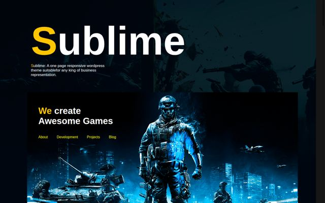
Sublime
Готов с оговоркамиЛендинг
Десктоп отличный, все 28 изображений на месте. Ноль media-запросов — адаптива нет.

Telegram Copy
Готов с оговоркамиТестовое задание: копия интерфейса
Тот же проект, что messenger-layout, но без SCSS-исходников.
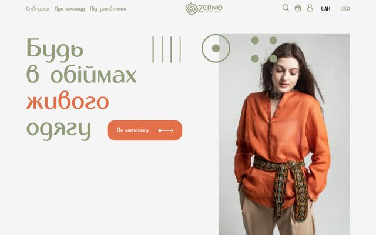
ZERNO
Готов с оговоркамиЛендинг
Починен webpack — сайт работал вообще без JS. Нет мобильного адаптива.
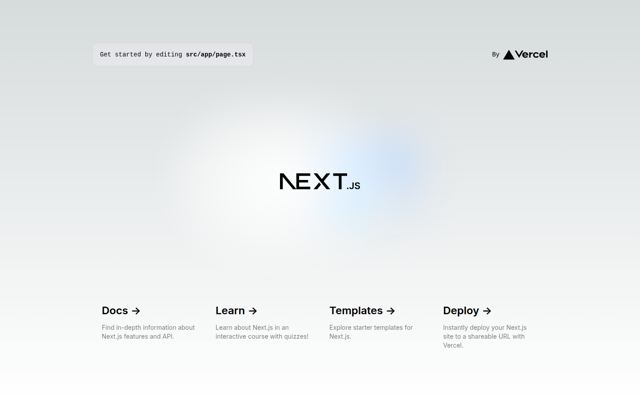
Portfolio (старое)
Показывать не стоитПрошлый сайт-портфолио
Помечен на удаление по твоему решению; заменяется новым Angular-портфолио.